Organic Chemistry, Academic Year 2024/2025
Lesson 2 outline
- Atomic structure
- Atomic orbitals
- Chemical bonding
- Lewis structures
- Resonance structures
- 3D structures
- Hybrid orbitals
- Bond polarity
Atomic Structure
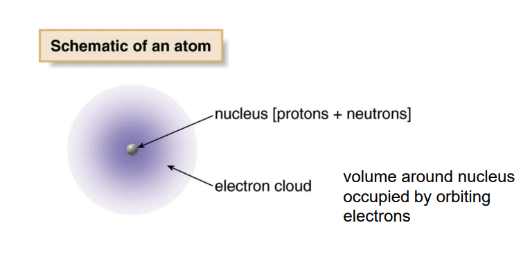
An atom consists of a nucleus at its center, which contains protons (positively charged) and neutrons (neutral).
Surrounding the nucleus are electrons (negatively charged), which move in regions called electron shells or orbitals. These shells represent different energy levels, with the electrons closest to the nucleus having lower energy and those further away having higher energy.
Identity and behavior: The number of protons defines the element, while the arrangement of electrons influences the atom's chemical behavior.
- Atomic number
-
The atomic number of an element is the number of protons in the nucleus of an atom of that element
-
Mass number
- The mass number is the number of protons plus neutrons in the nucleus
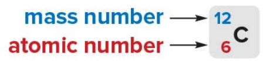
The atomic weight of a particular element is the weighted average of the mass of all its isotopes reported in atomic mass unit (amu).
- This difference in neutron count causes the isotopes to have different atomic masses (mass number = protons + neutrons), while still being the same element.
For this particular reason the atomic mass of a given element is calculated as a weighted average.
💡 What is an isotope of a given element?
- An isotope of an element refers to atoms of the same element that have the same number of protons but different numbers of neutrons. This means that isotopes of an element have the same atomic number (same number of protons) but different mass numbers (total number of protons and neutrons). For example, carbon has two common isotopes: Carbon-12 (6 protons and 6 neutrons) and Carbon-14 (6 protons and 8 neutrons).
Charged ions
An ion is an atom that has gained or lost one or more electrons, resulting in a net charge - Cations - Ions with a positive because they have lost electons. - Anions - Ions with a negative charge because they have gained an electron.
Atomic Orbitals
Atomic orbitals are regions around an atom's nucleus where there is a high probability of finding an electron. Orbitals are described by quantum mechanics and represent the wave-like behavior of electrons around the nucleus. Each orbital has a specific shape and energy level.
S Orbital
s orbitals are spherical because the probability distribution of finding an electron is the same in every direction around the nucleus. This spherical symmetry results from the mathematical solutions to the Schrödinger equation for an electron in a hydrogen atom.
P Orbitals
p orbitals are a type of atomic orbital with a dumbbell or figure-eight shape, and they are more complex than s orbitals
An element presenting p orbitals arrangements is comprised of 3 p orbital, one for each 3-Dimensional axis repectively: Px, Py and Pz. - Each p orbital has two lobes extending outwards starting from the nucleus, resembling a dumbbell shape. - These lobes represent regions where the probability of finding an electron is highest. - Between the two lobes, at the nucleus, there is a node, where the probability of finding an electron is zero. - Each p orbital can hold a maximum of two electrons with opposite spins. - This has something to do with the Pauli Exclusion Principle which is stuff coming from Quantum Mechanics. The priciple states that: > "No two electrons in the same orbital can have the same quantum numbers" for whatever this means...
You can literally imagine the shape as dictating where there's a high probability of finding an electron.
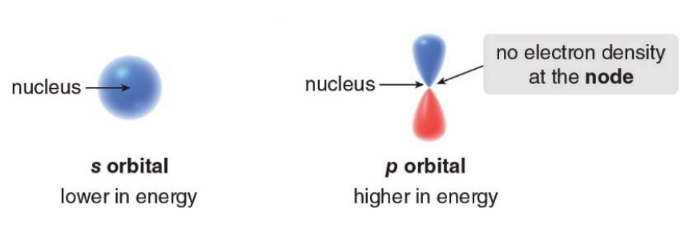
Shells, subshells and energy levels
- Energy levels are labeled by the pricipal quantum number n (1, 2, 3 and so on...).
- As you go up in energy levels the energy increases and so does the capacity to hold more electrons.
- The total number of electrons in an energy level is given by 2n^2
- First shell can hold 2(1**2) = 2 electrons
- Second shell can hold 2(2**2) = 8 electrons
-
Third shell can hold 2(3**2) = 18 electrons
-
Each energy level contains one or more subshells (s, p, d and f). These subshells are represented in the diagram:
- 1st shell: 1s (can hold 2 electrons).
- 2nd shell: 2s and 2p (together can hold 8 electrons: 2 in 2s and 6 in 2p).
- 3rd shell: 3s, 3p, and 3d (together can hold 18 electrons: 2 in 3s, 6 in 3p, and 10 in 3d).
-
...
-
Each subshell has a certain amount of orbitals and each orbital can hold two electrons
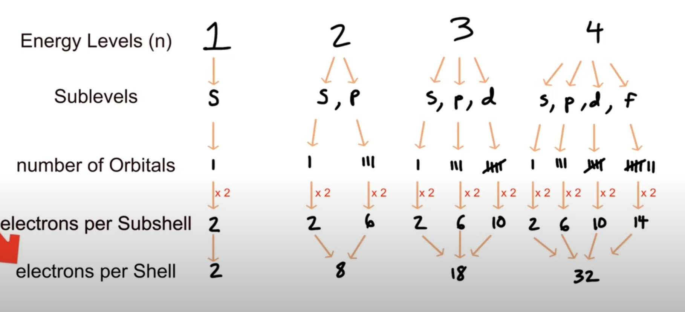
💡 Videos and resources - Gumball Degree: Shells, Subshells, and Orbitals: simple video on bohr's model - Some guy rendering p type subshells - Three Twentysix: What ARE atomic orbitals?: great video explaining the concept of electron density and why subshells are represented as shapes, which aren't really electron containers but rather a density plot of the places where an electron is most likely to be found around it's atom. - minutephysics: A Better Way To Picture Atoms - Sci Pills: Atomic orbitals 3D: Shows realistic 3D pictures of the simplest atomic orbitals of hydrogen - Atom wave functions (animation)
BOHR's Atomic model
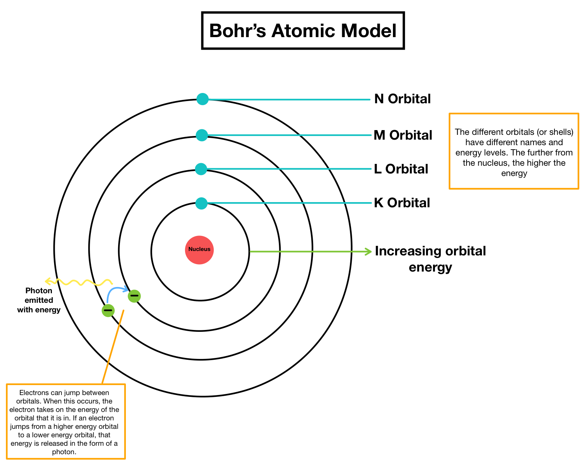
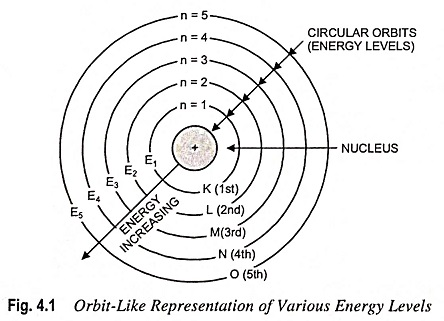
Subshells shapes
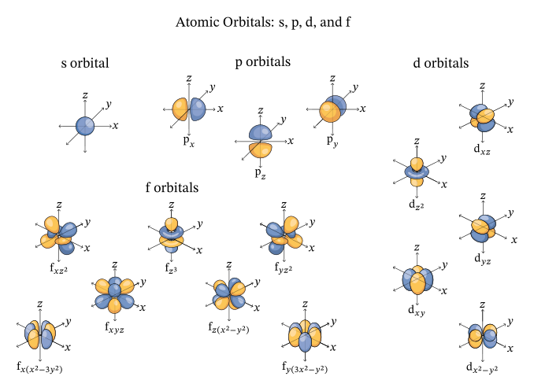
Orbitals and sub-orbitals (or shells and subshells) of Bound Electrons
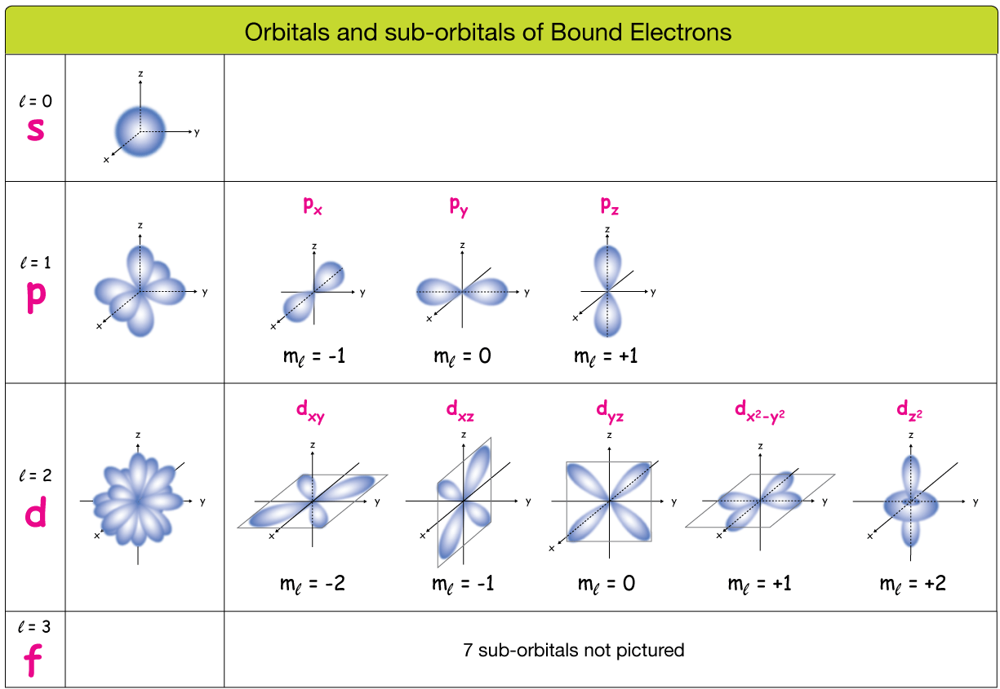
u/BayGO said on reddit:
"A Suborbital simply refers to the "type" (shape) of the orbital that the electron is orbiting around."*
Notes on the periodic table
- First row
- There is only one orbital in the first shell
- Each orbital can hold a maximum of two electrons
- There are two elements in the first row
- H (Hydrogen 1s^1)
- He (Helium 12^2)
- Second row
- Each element in the second row of the periodic table also has four orbitals available to accept additional electrons:
- one 2s orbital.
- and three 2p orbitals.
- There is a maximum capacity of eight valence electrons for elements in the second row.
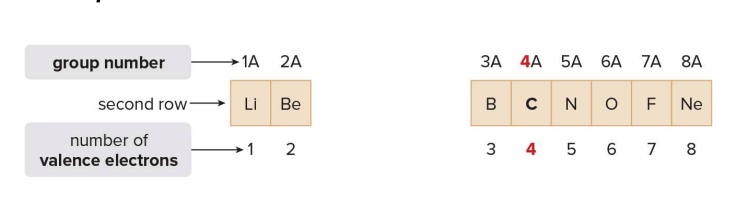
From the slides:
In orbitals at the same energy, electrons are distributed one per orbital, then the second is added
This really means that electrons prefering falling into an empty orbital at the same energy level rather that pairing up in an already occupied orbital. This is due to reduced electron-electron repulsion.
Going deeper:
When electrons are placed singly in different orbitals of the same subshell, they will all have the same spin direction (either all up or all down).
Electrons have a property called spin, which is like a small magnetic field. It can be thought of as spinning in one of two possible directions, often represented as:
- Up spin (denoted as ↑)
- Down spin (denoted as ↓)
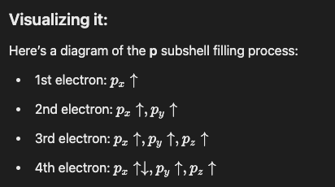
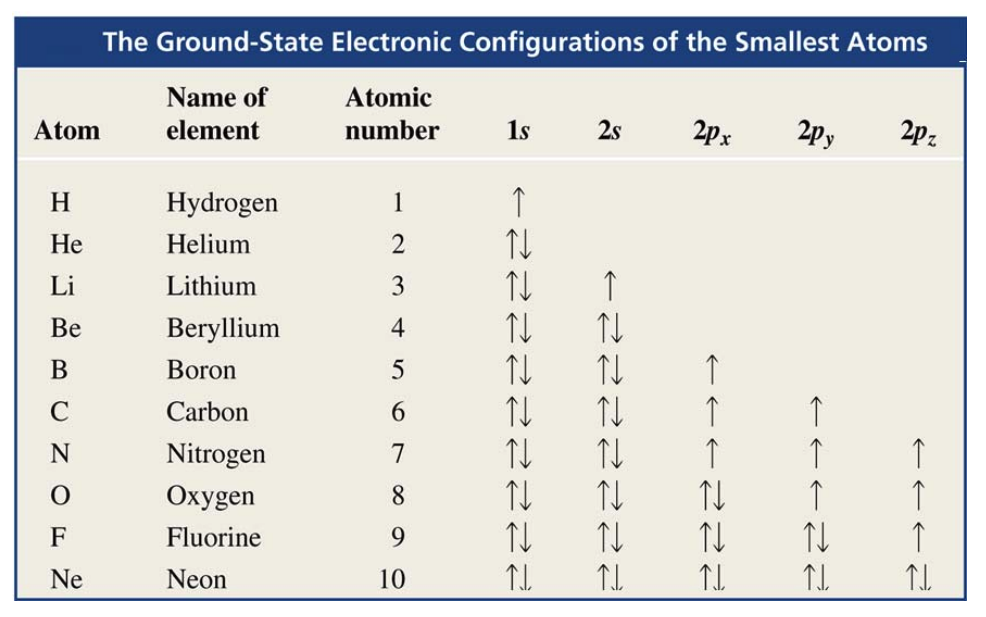
Chemical bonding
In this context, bonding refers to the joining of two atoms in a stable arrangement. Through bonding, atoms gain, lose or share electrons to attain the electronic configuration of the noble gas closest to them in the periodic table.
💡 What is a noble gas? A noble gas is an element whose outermost energy level (also called "valence shell") is completely filled with electrons.
Atoms can either form ionic or covalent bonds to attain a complete outershell, e.g. seeking stability. - Ionic bonds result from the transfer of an electron from one atom to another. - Covalent bonds result from the sharing of electrons between two nuclei.
Ionic bonds
These generally occur when elements from the far left side of the periodic table combine with elements from the far right side, ignoring noble gases.
A positively charged cation formed from the element on the left side attracts a negatively charged anion from the element right on side
💡 Why do Na and Cl keep staying close together after the ionic bonds (the electron was transferred), aren't they supposed to be stable and thus not needing to stay close?
Great question! Let’s clarify why sodium (\( \text{Na} \)) and chlorine (\( \text{Cl} \)) still have opposite charges after the electron transfer. The key here lies in understanding how the electron transfer affects the total number of protons and electrons in each atom, and how this creates the charges.
Before the Transfer:
- Sodium (Na):
- Atomic number = 11 (11 protons, which are positively charged).
- It also has 11 electrons (negatively charged) in a neutral state.
In this state, sodium has no net charge because the positive protons and negative electrons cancel each other out.
Chlorine (Cl):
- Atomic number = 17 (17 protons).
- It also has 17 electrons in a neutral state.
- Similarly, chlorine has no net charge because its positive and negative charges balance out.
After the Electron Transfer:
- Sodium (Na) loses 1 electron:
- Now sodium has 11 protons (still positively charged) but only 10 electrons (since it lost one electron).
This means sodium has 1 more proton than it has electrons. Since protons are positive, sodium becomes a positively charged ion (\( \text{Na}^+ \)) because it now has an excess positive charge.
Chlorine (Cl) gains 1 electron:
- Chlorine has 17 protons but now 18 electrons (since it gained an electron from sodium).
- This means chlorine has 1 more electron than it has protons. Since electrons are negative, chlorine becomes a negatively charged ion (\( \text{Cl}^- \)) because it now has an excess negative charge.
Why Do They Have Opposite Charges?
- Sodium (\( \text{Na}^+ \)) becomes positively charged because it has more protons than electrons after losing one electron.
- Chlorine (\( \text{Cl}^- \)) becomes negatively charged because it has more electrons than protons after gaining that electron.
Thus, the loss or gain of electrons directly results in an imbalance between protons (positive) and electrons (negative), creating these charges. Sodium is positive because it lost a negative electron, and chlorine is negative because it gained that electron.
Summary of the Charge Creation:
- Sodium (Na) loses 1 electron, leaving it with more protons than electrons, giving it a positive charge (\( \text{Na}^+ \)).
- Chlorine (Cl) gains 1 electron, leaving it with more electrons than protons, giving it a negative charge (\( \text{Cl}^- \)).
These opposite charges result in a strong electrostatic attraction between the \( \text{Na}^+ \) and \( \text{Cl}^- \) ions, which forms the ionic bond.
Covalent bonding
Covalent bonding occurs with elements like carbon in the middle of the table with elements that have similar electronegativity.
- In a covalent bond, atoms share one or more pairs of electrons. Each atom contributes at least one electron to the bond and these electrons are shared equally or unequally, depending on the atoms involved.
- Equally
- Electrons are shared equally between atoms with similar or identical electronegativities, resulting in no significant charge difference.
Example: Hydrogen molecule \( \text{H}_2 \) – Both hydrogen atoms share electrons equally because they have the same electronegativity.
- Electrons are shared equally between atoms with similar or identical electronegativities, resulting in no significant charge difference.
-
Unequally
- Electrons are shared unequally between atoms with different electronegativities, causing partial charges on the atoms (δ− and δ+).
Example: Water \( \text{H}_2\text{O} \) – Oxygen is more electronegative than hydrogen, leading to unequal sharing of electrons, with oxygen gaining a partial negative charge and hydrogen a partial positive charge.
- Electrons are shared unequally between atoms with different electronegativities, causing partial charges on the atoms (δ− and δ+).
-
A covalent bond is a two-electron bond and a compound with covalent bonds is called a Molecule.
Concept of Polarity:
Polarity refers to the unequal sharing of electrons in a bond, leading to regions of slight positive and negative charge, creating a dipole. A bond or molecule is polar if it has such charge separation, while it is nonpolar if the electrons are evenly distributed.
- Polar Bonds:
- In a polar covalent bond, one atom attracts the shared electrons more strongly than the other. This creates a dipole moment, where:
- The atom that attracts electrons more strongly becomes slightly negative (partial negative charge, δ−).
- The other atom becomes slightly positive (partial positive charge, δ+).
- The bond is said to be polar because there is a separation of charge, creating "poles" (one positive, one negative).
Example: In water \( \text{H}_2\text{O} \), oxygen is more electronegative than hydrogen, so the electrons are pulled closer to oxygen, making oxygen δ− and hydrogen δ+.
- Nonpolar Bonds:
- In a nonpolar covalent bond, the electrons are shared equally between the atoms, so there is no charge separation and no dipole moment.
- These bonds occur between atoms with the same or very similar electronegativity.
Example: In a molecule of oxygen \( \text{O}_2 \), both oxygen atoms share electrons equally, so the bond is nonpolar.
Polarity in Molecules:
- Polar molecules: Molecules with an overall charge separation due to polar bonds and an asymmetrical shape. Water \( \text{H}_2\text{O} \) is polar because of its bent shape and polar bonds.
- Nonpolar molecules: Molecules where the bonds are either nonpolar, or polar bonds cancel out due to a symmetrical arrangement. \( \text{CO}_2 \) (carbon dioxide) is nonpolar because its linear shape causes the polar bonds to cancel each other out.
💡 Videos and resources - Creative Learning: Mastering Chemical Bonding: Explained with 3D Animation - IslandSchoolHongKong: covalent bond animation - AtomicSchool: Chemical Bonding Introduction: Hydrogen Molecule, Covalent Bond & Noble Gases - AtomicSchool: Oxygen, Nitrogen & Carbon and Covalent Chemical Bonds - Hydrogenic Orbitals visualizer - Molecular Orbital visualizer
Hydrogen forms one covalent bond, when two hydrogen atoms are joined in a bond, each has a filled valence shell of two electrons.
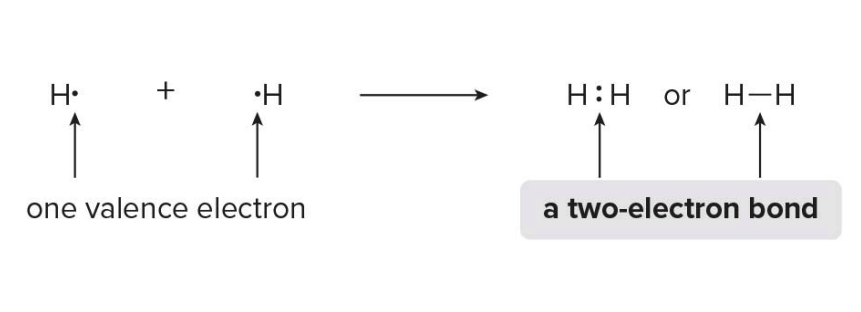
Valence electrons
-
Octet Rule The octet rule states that atoms tend to form bonds in such a way that they achieve a total of 8 electrons in their outermost (valence) shell, which makes them chemically stable. This configuration mimics the electron arrangement of noble gases, which are naturally stable due to having a full outer shell.
-
Second row elements can have no more that eight electrons around them. For neutral molecules, this has two consequences:
-
Atoms with one, two, three or four valence electrons form one, two, three or four bonds, respectively in neutral molecules (e.g. \( \text{BF}_3 \), \( \text{CH}_4 \))
- In boron trifluoride \( \text{BF}_3 \), each fluorine atom shares 1 electron with boron, completing fluorine’s octet and giving boron 3 shared electrons in its valence shell.
- Fluorine has an atomic number of 9, meaning it has 9 electrons: 2 in the first energy level and 7 in the second (valence) shell.
- The second shell can hold a maximum of 8 electrons, so fluorine is 1 electron short of completing its octet.
- Boron is one of the exceptions to the octet rule, meaning it can form stable compounds with fewer than 8 electrons in its valence shell. In \( \text{BF}_3 \), boron doesn't need a full octet to be chemically stable.
- Atoms with 1–4 valence electrons form as many bonds as they have valence electrons because they only have that many electrons available to share. These atoms are "sharing" their valence electrons with other atoms to reach the octet rule, or 8 electrons in their outer shell.
- The number of bonds they can form is directly tied to the number of valence electrons they have to offer.
-
Atoms with five or more valence electrons form enough bonds to give an octet (e.g. \( \text{NH}_3 \))
- In this case, the predicted number of bonds is given by = 8 - #{valence electrons}
- These atoms (like nitrogen, oxygen, and fluorine) are already close to 8 electrons in their valence shell.
- Since they already have most of the electrons they need (5, 6, or 7), they are more reactive and eager to form bonds with other atoms to quickly complete their octet.
- Oxygen, with 6 valence electrons, needs 2 more electrons to complete its octet. It easily achieves this by forming two covalent bonds, where each bond involves sharing one pair of electrons with another atom, allowing oxygen to reach the stable 8-electron configuration.
- It is always possible for an element having >= 5 valence electrons to reach the octet via covalent bonding.
Lewis structures
Lewis structures are dot representations for molocules
- General rules for drawing Lewis structures:
- Draw only the valence electrons
- Give every second-row element no more than eight electrons
-
Give each hydrogen two electrons
-
Each atom is represented by its chemical symbol
- C for Carbon, H for hydrogen, O for Oxygen
- Dots around the atomic symbol represent the valence electrons
- Covalent bonds (shared pairs of electrons) are represented by lines between atoms, where each line represents a pair of shared electrons.
- A single bond is one pair (one line)
- A double bond is two pairs (two lines)
- A triple bond is three pairs (three lines)
- Unshared pairs of electrons that are not involved in bonding are shown as pairs of dots next to the atomic symbol (lone pairs)
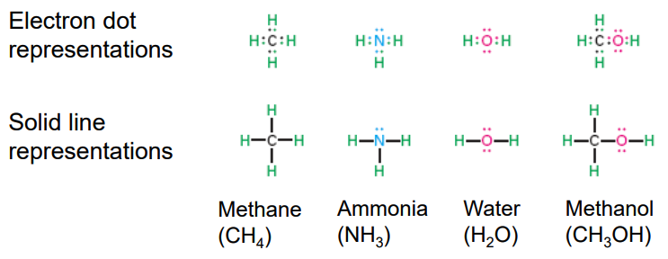
How to draw lewis structures
- Step 1: Arrange atoms next to each other that you think are bonded together.
- Always place Hydrogen and halogens on the periphery because they only form one bond each.
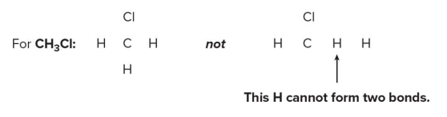
-
Place no more atoms around an atom than the number of bonds it usually forms.
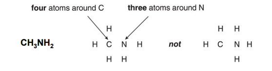
-
Step 2: Count the electrons
- Count the number of valence electrons from all atoms
- Add one electron for each negative charge
- e.g. For \( \text{NO}_3^- \) (nitrate ion) there is a -1 charge, so you add one additional electron to the total count.
- Subtract one electron for each positive charge
- e.g. For \( \text{NH}_4^+ \) (ammonium ion) there is a +1 charge, so you subtract one electron from the total count.
-
This gives the total number of electrons that must be used in drawing the Lewis structure.
-
Step 3: Arrange the electrons around the atoms.
- Place a bond between every two atoms, giving two electrons to each H and no more than eight to any second row atom.
- For each bond between atoms, place a single line (representing a pair of shared electrons).
- Each hydrogen (H) should receive two electrons (a single bond), while atoms in the second row of the periodic table (like carbon, nitrogen, or oxygen) should not exceed eight electrons (the octet rule).
- Use all remaining electrons to fill octets with lone pairs.
- After placing bonds, assign any remaining electrons as lone pairs on the atoms to complete their octet.
- Hydrogen atoms already have their 2 electrons from the single bond, so focus on completing the octets for the other atoms.
- If all valence electrons are used and atoms do not have an octet, form multiple bonds.
Ethylene structure \( \text{C}_2\text{H}_4 \)
H H
| |
H — C = C — H
| |
H H
- Step 4: Assign formal charges to all atoms
- Formal Charge is the charge assigned to individual atoms in a Lewis structure
- Formal charge is calculated as follows:
formal charge = #{valence electrons} - #{electrons owned by the atom}orformal charge = #{valence electrons} - (#{non-bonding electrons + #{bonding electrons}/2 })
- The number of electrons owned by an atom is determined by its number of bonds and lone pairs.
The number of electrons owned by different atoms is indicated in the following examples - C with four bonds - C shares eight electrons - C owns four electrons
|
— C —
|
- C molecule with double bond and sided single bonds
- Each C shares eight electrons
- Each C owns four electrons
\ /
C = C
/ \
- C with three bonds and a lone pair
- C has six shared electrons
- C has two unshared electrons (lone pair)
- C owns five electrons
|
— C :
|
This arrangement creates a formal charge of value -1.
Exceptions to the octet rule
- Incomplete octet
Some atoms are stable with fewer than 8 electrons in their valence shell. This is common for elements that have only a few valence electrons and are unable to to form enought bonds to react the octet.
- B (Boron): this element often forms compounds like \( \text{BF}_3 \) (boron trifluoride), where it only has 6 electrons in its valence shell, not 8. Boron is stable in this electron-deficient state.
-
Be (Beryllium): this other element forms compounds like \( \text{BeCl}_2 \) where it has only 4 electrons in its valence shell.
-
Expanded octet Seen in elements like phosphorus, sulfur, and xenon, where they can have more than 8 electrons by using d-orbitals.
⚠️ Not covered here as out of scope.
-
Odd number of electrons
Some molecules have an odd number of electrons, meaning it's impossible for every atom to have 8 electrons. These molecules are called radicals and are stable despite having unpaired electrons.
- $ \text{NO}_2 $ (Nitrogen dioxide): Within this molecule, nitrogen has 5 valence electrons, and the molecule has a total of 17 electrons. This leaves on electron unpaired, making it radical.
- Nitrogen does not have 8 electrons in its valence shell.
- \( \text{NO} \) (Nitric Oxide): A molecule with has 11 electrons and does not follow the octet rule due to the odd number of electrons.
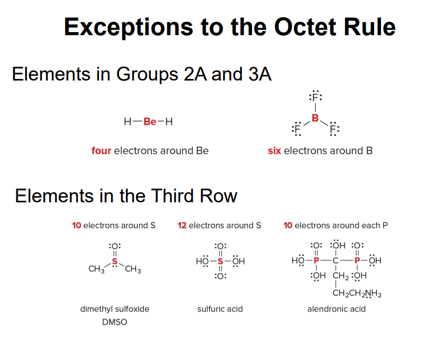
Resonance structures
Some molecules cannot be adequately represented by a single Lewis structure
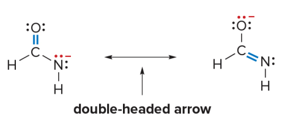
- These structures are called resonance structures or resonance forms.
- A double headed arrow is used to separate the two resonance structures.
Resonance structures are two Lewis structures having the same atoms placement but a different arrangement of electrons.
Resonance structures are different possible Lewis structures for the same molecule that have the same arrangement of atoms but different distributions of electrons, particularly the location of double bonds or lone pairs.
Principles of resonance theory
- Resonance structures are not real: An individual resonance structure does not accurately represent the structure of a molecule or ion. Only the hybrid does.
- Resonance structures are not in equilibrium with each other.
- Resonance structures are not isomers: Two isomers differ in the arrangement of both atoms and electrons, whereas resonance structures differ only in the arrangement of electrons.
What really is resonance? Resonance is the phenomenon where the true electronic structure of a molecule cannot be represented by just one Lewis structure. Instead, the real structure is a weighted average (or blend) of all possible resonance structures.
- Resonance helps stabilize molecules by allowing the electron density to be distributed over a larger area.
What is a resonance hybrid? The resonance hybrid is the actual structure of the molecule that results from averaging all the possible resonance structures. It represents the delocalized electron distribution across the molecule.
- Neither of the resonance structures is an accurate representation for \( \text{(NCONH)}^- \)
- The true structure is actually a composite of the two structures represented above and is called a resonance hybrid
- The hybrid shows characteristics of both structures.
- Resonance allows certain electron pairs to be delocalized over two or more atoms, and this delocalization adds stability.
- A molecule with two or more resonance forms is said to be resonance stabilized.
Curved arrow notation
- Curved arrow notation is a convention that shows how electron position differs between two resonance forms
- Curved arrow notation shows the movement of an electron pair.
- The tail of the arrow always begins at the electron pair, either in a bond or lone pair.
- The head points to where the electron pair moves.
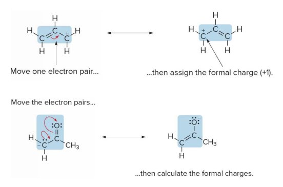
- Two different resonance structures can be drawn when a lone pair is located on an atom directly bonded to a double bond.
- If an atom having a lone pair in single bonded to another atom having a some double bond.
- That double bond is lost into a in single bond.
- The doubly bonded end gains a lone pair.
- The bofore singly bonded atom now gains another bond, making it effectively a double bond.
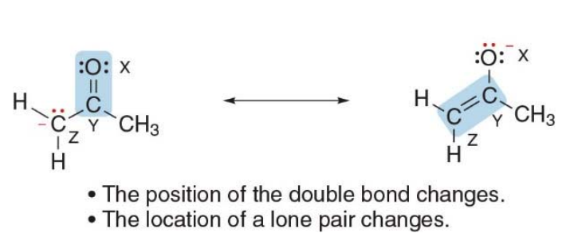